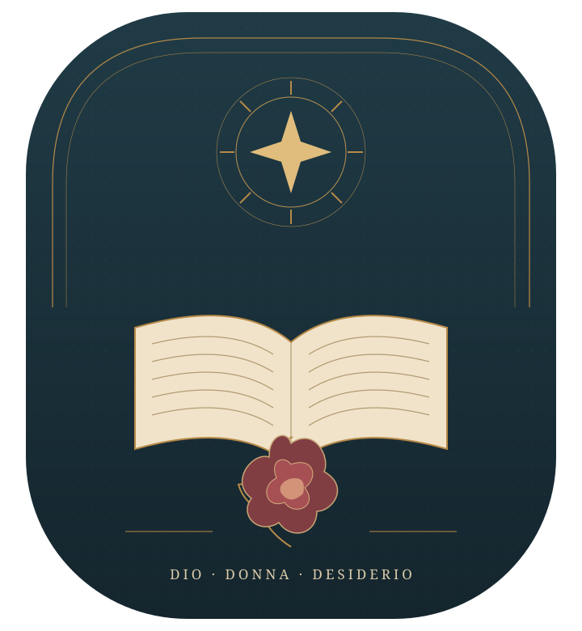
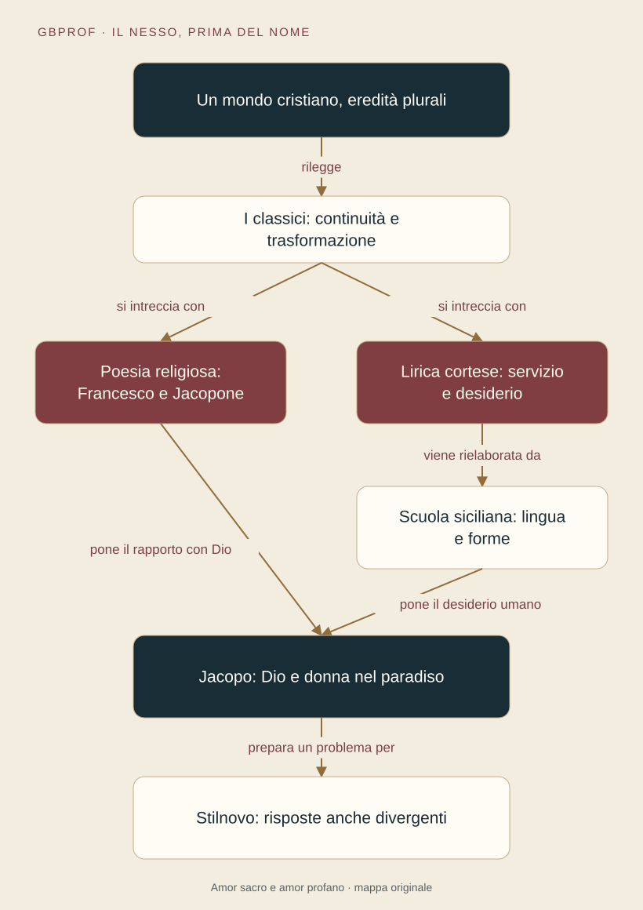

Un problema, otto tappe · XI–XIII secolo
Amor sacro
e amor profano
Il conflitto tra Dio, donna e desiderio
nella letteratura medievale
Si può amare una creatura senza allontanarsi dal Creatore?
Dalle lezioni originali di gbprof, rivedute e ampliate con Libera.

Due amori attraversano le origini della nostra letteratura. A volte si oppongono, a volte si parlano. Seguiremo i testi per capire come cambia il rapporto tra corpo, desiderio e salvezza.
Il titolo è una chiave di lettura del Medioevo letterario: non riprende l’interpretazione del dipinto di Tiziano. L’ordine è tematico; la cronologia distingue tradizioni che in parte convivono.
La mappa generale e le coordinate del tempo
Fine XI–XII secolo: poesia occitanica. Primo Duecento: Francesco e la corte di Federico II. Seconda metà del Duecento: Jacopone e le nuove esperienze poetiche comunali. La successione delle tappe è tematica: Francesco e Jacopone non precedono storicamente tutta la lirica cortese.

Da dove viene il percorso
Fonti, testi e scelte di lettura
Che cosa abbiamo corretto
- Il sonetto ha 14 endecasillabi, non 12 versi.
- La cultura cristiana rilegge i classici: non cancella la tradizione amorosa antica.
- Il confronto Francesco–Jacopone è una porta d’ingresso, non una divisione del cristianesimo in due blocchi.
- La perfetta letizia comprende la fedeltà e la pazienza nella prova; non è solo armonia del creato.
- Servizio feudale, frustrazione sociale e vita di corte sono chiavi interpretative, non spiegazioni universali documentate.
- Non ogni donna cortese è la moglie del signore, né ogni desiderio è necessariamente inappagato.
- L’accostamento donna–angelo non è ancora nei Siciliani una teoria sistematica della salvezza.
- Il passaggio allo Stilnovo apre nuove risposte e nuovi conflitti: non chiude automaticamente il problema.
Il tuo spazio di studio
Note, lettura e risultati restano in questo browser. Non vengono inviati al docente. La cancellazione riguarda solo questo percorso.